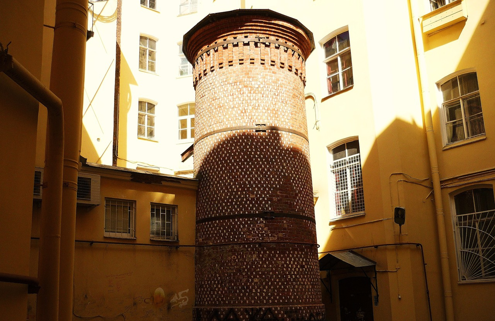
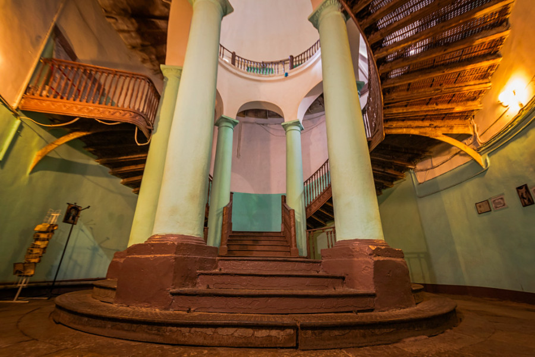
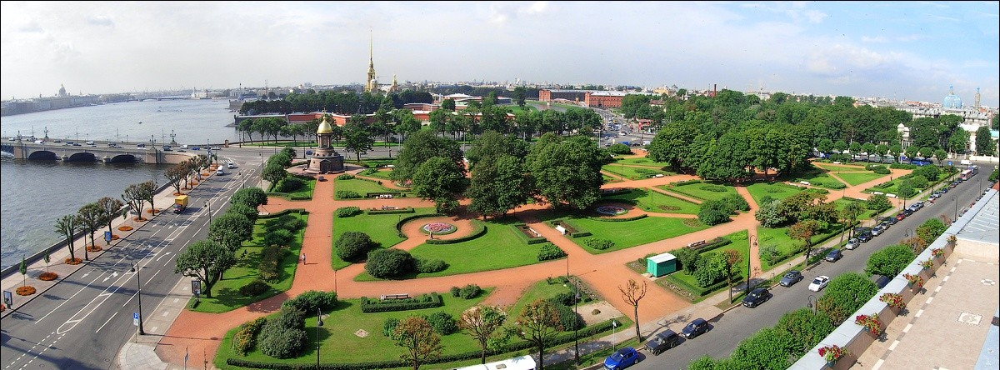

Онлайн-платформа с интерактивной картой, на которой отмечены места, связанные с легендами Петербурга, и которые отсортированы по отзывам на Яндекс Картах.
ИсследоватьСоздать небанальные маршруты для туристов: дворы-колодцы, ротонды и другие места Петербурга, окружённые легендами и городским фольклором.
Для студентов-культурологов и краеведов проект служит образовательным инструментом, а для городских бюро — готовым цифровым продуктом для популяризации локального культурного наследия.
Санкт-Петербург — город туманов, дворцов и загадок. Мы собрали самые известные городские легенды, мистические истории и современные интернет-мифы, чтобы показать, как фольклор продолжает жить в цифровую эпоху.
Одна из древнейших легенд Петербурга.
Легенда о призрачном двойнике императрицы.
Алхимия Вильгельма Пеля и тайные знания.
Последняя квартира «Святого черта».
На карте отмечены ключевые объекты исследования городских мифов и легенд Санкт-Петербурга.

Алхимия, тайные коды и мифические стражи.

Портал в ад и тайные ритуалы.
Самый знаменитый полтергейст города.

Древнее проклятие Петербурга.
Призрачный двойник императрицы.
Были изучены городские легенды, исторические статьи и краеведческие материалы.
Собраны современные обсуждения из социальных сетей, блогов и форумов.
Сравнены исторические факты и современные интерпретации легенд.
Для каждой легенды были определены реальные городские координаты.
Все объекты нанесены на карту для удобного исследования.
Результаты исследования были оформлены в виде интерактивного веб-проекта.
Отзывы участников тестирования проекта
«Очень необычный взгляд на Петербург. Узнала о местах, мимо которых проходила десятки раз и даже не подозревала об их легендах.»
— Анна Ковалева«Особенно понравилась легенда о Башне Грифонов. Сайт удобный, а карта помогает быстро понять, где находятся все места и как их посетить.»
— Дмитрий Орлов«Проект показал Петербург с совершенно другой стороны. Обычно туристы видят только известные достопримечательности, а здесь собраны места с настоящим городским фольклором.»
— Екатерина СмирноваУчастники, работавшие над исследованием мифов и легенд Санкт-Петербурга
Координация работы команды, распределение задач и контроль реализации проекта.
Работа с обработкой данных, картой и технической частью проекта.
Разработка структуры сайта и подготовка материалов для публикации.
Сбор и систематизация информации из открытых источников.
Поиск интернет-упоминаний и подготовка данных для исследования.
Редактирование материалов и подготовка текстов проекта.
Проверка функциональности сайта и контроль качества проекта.